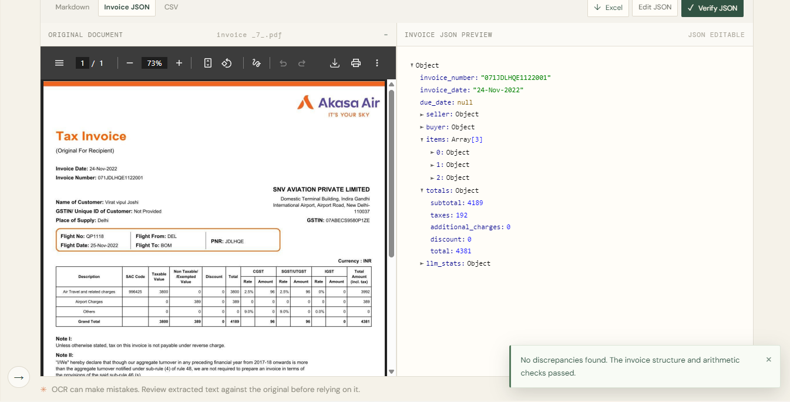
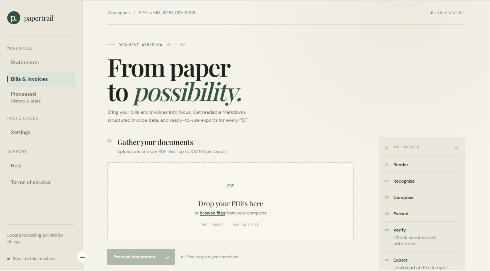
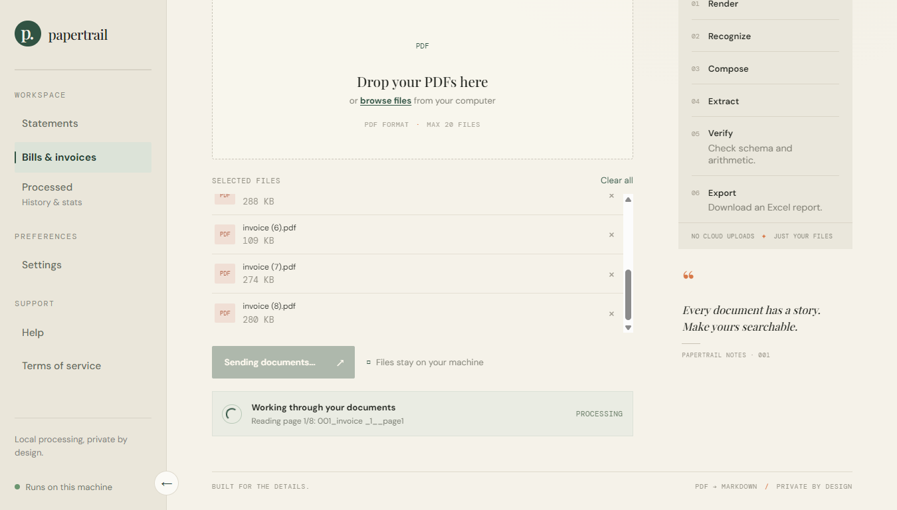
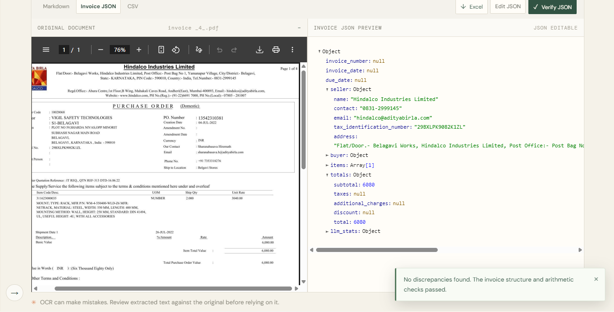
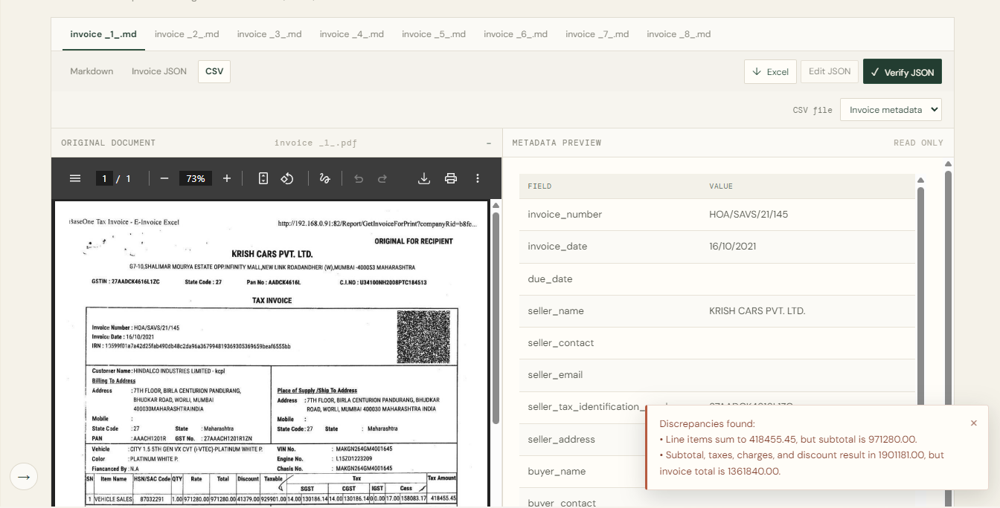
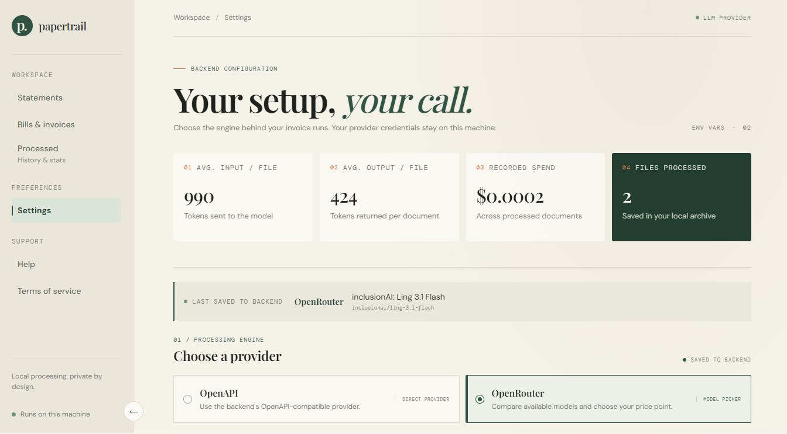
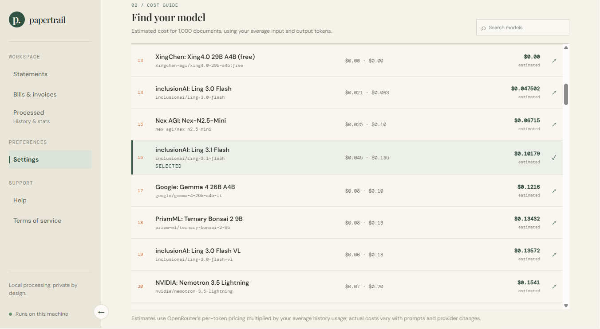

Papertrail reads your PDF bills and invoices, pulls out every field, checks the math, and hands you clean Excel, CSV or JSON. It runs on your own PC, with the AI model you choose.

Drop in PDFs. Papertrail reads them like a person would, then double-checks like an accountant would.
Each PDF page is rendered sharp, even if it's a scan or a photo.
Text is read from the page, including messy layouts and stamps.
Text is arranged into readable Markdown that keeps tables intact.
Your chosen AI model understands the document and fills a structured invoice.
Schema and arithmetic checks flag anything that doesn't add up.
Download Excel, CSV, JSON or Markdown. Ready for your books.
Upload up to 20 PDFs at a time (100 MB per batch) and let Papertrail work through them page by page while you get on with your day.


No templates to build. No rules per vendor. The AI model reads the document in context and returns a structured invoice, whether it's a GST tax invoice, a purchase order or an airline ticket.

AI is fast, and AI can slip. So every extraction is checked against the arithmetic of the invoice itself. If line items, taxes and totals disagree, Papertrail tells you exactly where.

Connect OpenRouter and choose from a catalog of models, including free ones, or point Papertrail at any OpenAI-compatible endpoint. A built-in cost guide estimates what 1,000 documents will cost on each model, using your own usage numbers.


Accountants, bookkeepers, small business owners and finance teams: less data entry, fewer typos, more time for the work that needs you.
Understands document context to pull the right field from the right place, on layouts it has never seen.
No setup per vendor. Throw in a tax invoice, a purchase order or a utility bill.
Up to 20 PDFs and 100 MB per batch, with page-by-page progress.
Schema and arithmetic checks compare line items, taxes, charges, discounts and totals.
Taxes are parsed as name, rate and amount: GST, CGST, SGST, IGST, VAT, sales tax.
Original PDF and extracted data share one screen, so checking is quick.
Fix any value, hit Verify JSON, and know your correction still balances.
Export what your workflow needs, including a combined Excel report.
Every processed document is kept in a history on your machine, with stats.
OpenRouter model picker, any OpenAI-compatible endpoint, or your own vLLM server.
See average tokens per file, recorded spend, and per-model estimates for 1,000 documents.
The same AI extraction and verification for bank statements. In development now.
Papertrail runs on your PC. Your PDFs are never uploaded. The text is parsed locally, and only the text needed to build the structured data goes to the model you choose.
PDFs are rendered and read on your machine. The history archive and your provider credentials stay on your machine too.
Only parsed text is sent to the model, never the whole file. OpenRouter doesn't log prompts unless you turn logging on yourself.
Point Papertrail at your own self-hosted vLLM server and nothing leaves your network. Not even the text.
Logging policies belong to your chosen provider and can change. Review your provider's current terms for sensitive data.
Try the numbers with your own volume. We assume you still glance over every result, because you should.
| Manual entry | Papertrail | |
|---|---|---|
| Data capture | Type every field, line by line | AI fills the whole invoice |
| Math checks | Calculator and good intentions | Automatic, on every file |
| Typos | Transposed digits slip through | Mismatches flagged for review |
| Taxes | Split by hand, rate by rate | Name, rate and amount extracted |
| Output | Copy and paste into sheets | Excel, CSV, JSON, Markdown |
| Cost | Your time, every month | ₹499 once, plus pennies of AI usage |
Illustrative estimate based on the numbers you enter. AI model usage is billed separately by your provider and is typically a tiny fraction of a cent per invoice on budget models.
Try it free for 15 days on every new install. Keep it with a single payment. No subscription, no per-document fees from us.
No. Taxes are extracted as name, rate and amount, so GST, VAT, sales tax and other schemes all fit. Papertrail handles Indian GST invoices well, and it isn't limited to them.
Your PDFs stay on your machine. Papertrail parses them locally and sends only the text needed to create structured data to the AI model you configure. For zero external traffic, connect your own self-hosted vLLM server.
Choose from the OpenRouter catalog with the built-in model picker and cost guide, use any OpenAI-compatible endpoint, or run your own vLLM server.
Papertrail checks the extracted data against the invoice's own arithmetic and warns you about discrepancies. You can compare against the original PDF, edit the JSON and re-verify. As with any OCR or AI tool, review results before relying on them.
Each new install gets a 15-day trial. After that, a one-time app fee of ₹499 unlocks it for good. The fee is non-refundable.
You do, directly through your provider, and you stay in control. Papertrail shows your token usage, recorded spend and per-model estimates so there are no surprises.
Not yet. Bank statement parsing is an upcoming feature.
Download Papertrail, drop in a few PDFs, and see the structured data for yourself.
Download for Windows